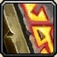

Encantamento é, talvez, a única profissão do World of Warcraft que não pode ser categorizada, já que não é de coleita. Encantadores tomam materiais de
encantamento obtidos através do desencantamento de equipamentos de qualidade incomum ou melhor - e transformam eles em encantamentos permanentes
para uso próprio ou para o equipamento de seus aliados.